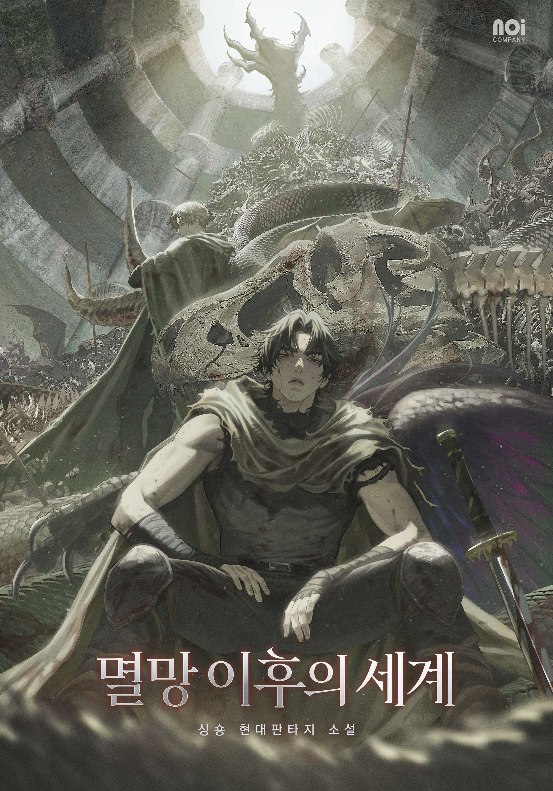

A WORLD BEYOND THE TOWERSING SHONG · FANTASY NOVEL
The World
After the Fall.
The tower was only the beginning.
Enter a world where one man
refuses to turn back.
Your place is saved automatically on this device.
Chapter discussion